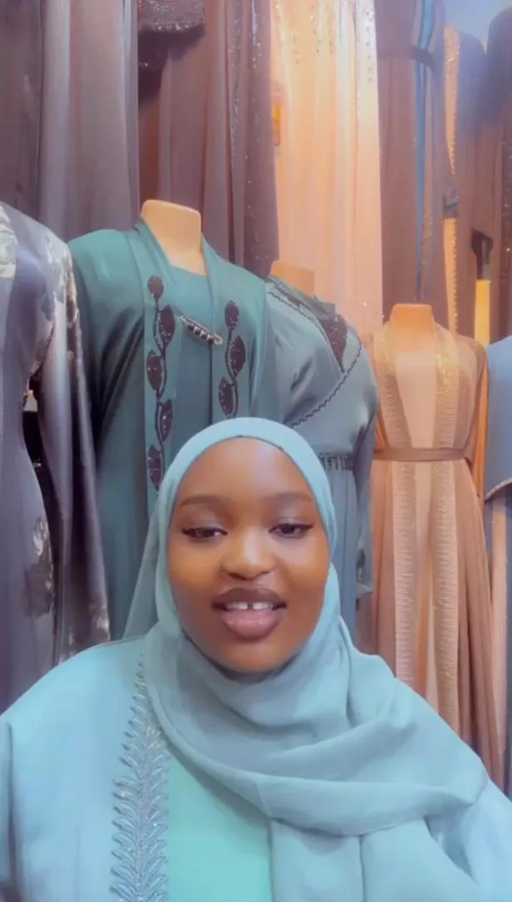
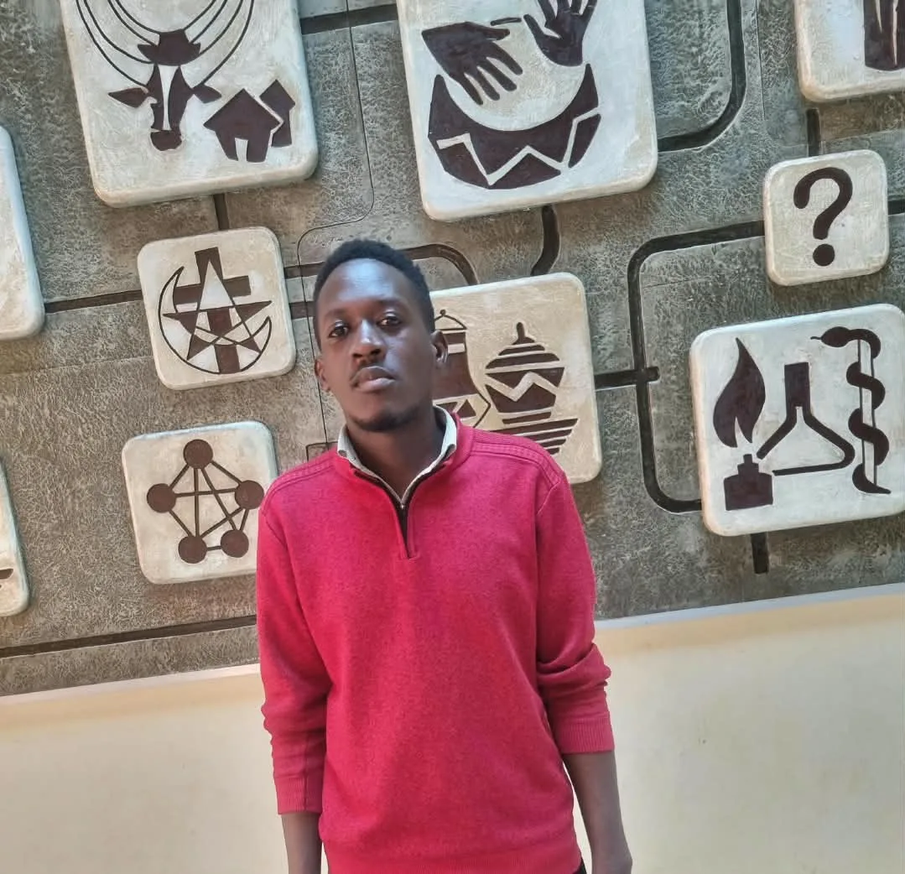

Fragrance
NYANGOMA SUMAIYA
Registration Number: 25/U/04046/EVE
Playful and outspoken, Sumaiya turns a conversation about perfume into a search for someone’s signature scent.
Read my journal ↗The collective journal
Four Individuals. Four Personalities.
Four Passions. One Collective Story.
Inside the journal
Come spend a little time with us outside the lecture hall. Pick a journal to meet the person behind the passion.
Registration Number: 25/U/04046/EVE
Playful and outspoken, Sumaiya turns a conversation about perfume into a search for someone’s signature scent.
Read my journal ↗
Registration Number: 25/U/03884/PS
Thoughtful and quietly assured, Shuraifah explores how an abaya can express faith, comfort and individual taste.
Read my journal ↗
Registration Number: 25/U/03842/PS
Ian brings the same curiosity to a new conversation and a blank sketchbook. His portraits begin with looking closely.
Read my journal ↗
Registration Number: 25/U/04101/PS
Observant and disciplined, Martin puts his energy into the details of a meal and the people gathered around it.
Read my journal ↗Our philosophy
In a lecture hall, we share a timetable. Step outside and our days take different shapes. One of us is helping someone choose a cologne. Another is considering how a sleeve should fall. A face catches Ian’s eye while Martin is thinking about what to serve.
We made this journal to give those hours a place of their own. Friendship gives us room to try things out, and working on something we care about teaches us what we want to do next.